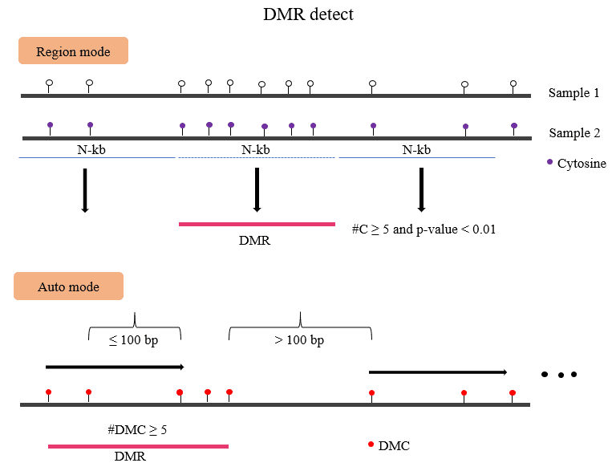

DiffMeth
Contents
DiffMeth#
BatMeth2 DMC or DMR/DMG#
{kind=link}
You can get dmc and dmr result with:
$ bmDMR -p mutant.output.dm \
-1 mutant.methratio.mbw -2 WT.methratio.mbw \
-methdiff 0.2 -minstep 100 -mindmc 5 -pval 0.01
obtained hyper、hypo dmc/dmr from dmc/dmr results
$ awk -v OFS="\t" 'gsub(/\,/,"\t",$NF)' mutant.output.dmr | \
awk '$(NF-2)>4 && $NF<=1' > mutant.output.hyper.dmr
$ awk -v OFS="\t" 'gsub(/\,/,"\t",$NF)' mutant.output.dmr | \
awk '!($(NF-2)>4 && $NF<=1)' > mutant.output.hypo.dmr
$ awk '$NF>0' mutant.output.dmc | awk '{print $1"\t"$2"\t"$2}' \
> mutant.output.hyper.dmc
$ awk '$NF<0' mutant.output.dmc | awk '{print $1"\t"$2"\t"$2}' \
> mutant.output.hypo.dmc
Usage#
[ Main paramaters ] |
|
|---|---|
-p |
output file prefix |
-1 |
sample1 methy mbw files, sperate by space. |
-2 |
sample2 methy mbw files, sperate by space. |
–mindmc |
min dmc sites in dmr region. [default : 4] |
–minstep |
min step in bp [default : 100] |
–maxdis |
max length of dmr [default : 0] |
–pvalue |
pvalue cutoff, default: 0.01 |
–FDR |
adjust pvalue cutoff default : 1.0 |
–methdiff |
the cutoff of methylation differention. default: 0.25 [CpG] |
–element |
caculate predefinded region, input file with id. |
–context |
Context for DM. [CG/CHG/CHH/ALL] |
-L |
predefinded regions or loci. |
-h|–help |
|
Auto define DMR region according the dmc
BatMeth2 bmDMR -p dm.output -1 [sample1.methC.mbw replicates ..] \
-2 [sample2.methC.mbw replicates ..]
Pre-definded regions (Gene/TE/UTR/CDS or other regions, not suggest)
BatMeth2 bmDMR -L -o_dm dm.output -1 [sample1.methC.mbw replicates ..] \
-2 [sample2.methC.mbw replicates ..]
Output file#
DMC
# format
Chrom position starnd context pvalue adjust_pvalue combine_pvalue corrected_pvalue \
cover_sample1 meth_sample1 cover_sample2 cover_sample2 meth.diff
DMR
# format
Chrom start end methlevelInSample1 methlevelInSample2 NdmcInRegion hypermdc,hypodmc
Tip
For feature requests or bug reports please open an issue on github.